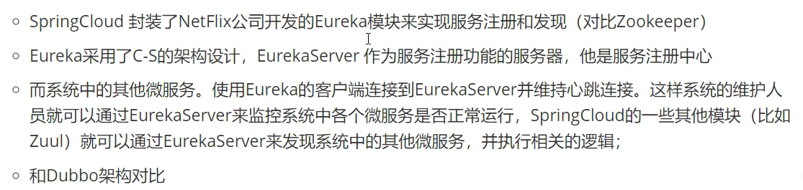

什么是 Eureka？
Netflix在设计Eureka时，遵循的就是AP原则
Eureka是Netflix的一个子模块，也是核心模块之一。Eureka是一个基于REST的服务，用于定位服务。以实现云端中间层服务发现和故障转移，服务注册与发现对于微服务来说是非常重要的，有了服务注册和发现，只需要使用服务的标识符，就可以访问到服务，而不需要修改服务调用的配置文件了，功能类似于Dubbo的注册中心，比如Zookeeper；
基本原理：
Eureka的基本架构


三大角色

三大角色对应三个依赖
server：spring-cloud-starter-eureka-server
Provider：spring-cloud-starter-eureka
Consumer：
一般导入功能的步骤
1、导入依赖
2、编写配置文件
3、开启这个功能 @EnableXXXXX
4、配置类
1、新建Eureka-server项目，启动Eureka-server服务
1、1导入依赖
<dependencies>
<!--eureka server-->
<dependency>
<groupId>org.springframework.cloud</groupId>
<artifactId>spring-cloud-starter-eureka-server</artifactId>
<version>1.4.6.RELEASE</version>
</dependency>
<!--热部署-->
<dependency>
<groupId>org.springframework.boot</groupId>
<artifactId>spring-boot-devtools</artifactId>
</dependency>
</dependencies>
1、2、添加配置
server:
port: 7001
#Eureak
eureka:
instance:
hostname: localhost #Eureka服务端的实例名称
client:
register-with-eureka: false #表示是否向eureka注册自己
fetch-registry: false #false表示自己为注册中心
service-url: #监控页面
defaultZone: http://${eureka.instance.hostname}:${server.port}/eureka
1、3、配置启动类
package com.springcloud;
import org.springframework.boot.SpringApplication;
import org.springframework.boot.autoconfigure.SpringBootApplication;
import org.springframework.cloud.netflix.eureka.server.EnableEurekaServer;
/**
* @Auther:LiKang
* @Date:2021/8/23 -08 -23 -9:23
* @Description: com.springcloud
* @version: 1.0
*/
@SpringBootApplication
@EnableEurekaServer //@EnableEurekaServer 服务端的启动类，可以接受别人注册进来
public class EurekaServer_7001 {
public static void main(String[] args) {
SpringApplication.run(EurekaServer_7001.class,args);
}
}
2、将服务提供者中的服务交给 Eureka-server。
2、1、添加依赖
<dependencies>
<!--服务提供者eureka的依赖-->
<dependency>
<groupId>org.springframework.cloud</groupId>
<artifactId>spring-cloud-starter-eureka</artifactId>
<version>1.4.6.RELEASE</version>
</dependency>
<!--actuator 完善监控信息-->
<dependency>
<groupId>org.springframework.boot</groupId>
<artifactId>spring-boot-starter-actuator</artifactId>
</dependency>
<!--需要拿到实体类，需要配置API module-->
<dependency>
<groupId>org.example</groupId>
<artifactId>springcloud-api</artifactId>
<version>1.0-SNAPSHOT</version>
</dependency>
<!--junit-->
<dependency>
<groupId>junit</groupId>
<artifactId>junit</artifactId>
</dependency>
<dependency>
<groupId>ch.qos.logback</groupId>
<artifactId>logback-core</artifactId>
</dependency>
<dependency>
<groupId>org.mybatis.spring.boot</groupId>
<artifactId>mybatis-spring-boot-starter</artifactId>
</dependency>
<!--test-->
<dependency>
<groupId>org.springframework.boot</groupId>
<artifactId>spring-boot-test</artifactId>
</dependency>
<dependency>
<groupId>org.springframework.boot</groupId>
<artifactId>spring-boot-starter-web</artifactId>
</dependency>
<!--热部署-->
<dependency>
<groupId>org.springframework.boot</groupId>
<artifactId>spring-boot-devtools</artifactId>
</dependency>
</dependencies>
2、2、添加配置
server:
port: 8001
#mybatis配置
mybatis:
type-aliases-package: com.springcloud.pojo
config-location: classpath:mybatis/mybatis-config.xml
mapper-locations: classpath:mybatis/mapper/*.xml
#spring配置
spring:
application:
name: springcloud-provider-dept
datasource:
type: com.alibaba.druid.pool.DruidDataSource #数据源
driver-class-name: com.mysql.cj.jdbc.Driver
url: jdbc:mysql://localhost:3306/db01?useUnicode=true&characterEncoding=utf-8&serverTimezone=GMT%2B8
username: root
password: 2019936206
#Eureka的配置，服务注册到哪里
eureka:
client:
service-url:
defaultZone: http://localhost:7001/eureka/
instance:
instance-id: springcloud-provider-dept-8001 #修改eureak上的默认描述信息
#info配置（actuator 完善监控信息,告知需要调用该服务的信息）
info:
app.name: lk
company: qtz.com
2、3、配置启动类
package com.springcloud;
import org.springframework.boot.SpringApplication;
import org.springframework.boot.autoconfigure.SpringBootApplication;
import org.springframework.cloud.netflix.eureka.EnableEurekaClient;
/**
* @Auther:LiKang
* @Date:2021/8/22 -08 -22 -15:19
* @Description: com.springcloud
* @version: 1.0
*/
//启动类
@EnableEurekaClient //在服务启动后自动注册到Eureka server中
@SpringBootApplication
public class DeptProvider_8001 {
public static void main(String[] args) {
SpringApplication.run(DeptProvider_8001.class,args);
}
}
3、服务消费者去 Eureka-server 获取服务。
Eureka服务注册-信息配置-自我保护机制
Eureka的自我保护机制：

Eureka集群环境配置：

修改hosts里的内容：（映射）

server:
port: 7001
#Eureak
eureka:
instance:
hostname: localhost #Eureka服务端的实例名称
client:
register-with-eureka: false #表示是否向eureka注册自己
fetch-registry: false #false表示自己为注册中心
service-url: #监控页面
#单机defaultZone: http://${eureka.instance.hostname}:${server.port}/eureka
#集群：关联
defaultZone: http://localhost:7002/eureka/,http://localhost:7003/eureka/
server:
port: 7002
#Eureak
eureka:
instance:
hostname: localhost #Eureka服务端的实例名称
client:
register-with-eureka: false #表示是否向eureka注册自己
fetch-registry: false #false表示自己为注册中心
service-url: #监控页面
#单机：defaultZone: http://${eureka.instance.hostname}:${server.port}/eureka
#集群：
defaultZone: http://localhost:7001/eureka/,http://localhost:7003/eureka/
server:
port: 7003
#Eureak
eureka:
instance:
hostname: localhost #Eureka服务端的实例名称
client:
register-with-eureka: false #表示是否向eureka注册自己
fetch-registry: false #false表示自己为注册中心
service-url: #监控页面
#单机：defaultZone: http://${eureka.instance.hostname}:${server.port}/eureka
#集群：
defaultZone: http://localhost:7001/eureka/,http://localhost:7002/eureka/
然后更改 服务提供者，让其发布到 三台eureka server上
server:
port: 8001
#mybatis配置
mybatis:
type-aliases-package: com.springcloud.pojo
config-location: classpath:mybatis/mybatis-config.xml
mapper-locations: classpath:mybatis/mapper/*.xml
#spring配置
spring:
application:
name: springcloud-provider-dept
datasource:
type: com.alibaba.druid.pool.DruidDataSource #数据源
driver-class-name: com.mysql.cj.jdbc.Driver
url: jdbc:mysql://localhost:3306/db01?useUnicode=true&characterEncoding=utf-8&serverTimezone=GMT%2B8
username: root
password: 2019936206
#Eureka的配置，服务注册到哪里
eureka:
client:
service-url:
defaultZone: http://localhost:7001/eureka/,http://localhost:7002/eureka/,http://localhost:7003/eureka/
instance:
instance-id: springcloud-provider-dept-8001 #修改eureak上的默认描述信息
#info配置（actuator 完善监控信息,告知需要调用该服务的信息）
info:
app.name: lk
company: qtz.com
Eureka对比Zookeeper


@EnableDiscoveryClient和@EnableEurekaClient的区别
简单区分下，他们在功能上是一致的：写在启动类的上，开启服务注册发现功能。
不同的是，当注册中心不一样时，像：eureka、consul、zookeeper，使用是也有了区别。
EnableDiscoveryClient注解在common包中，通过项目的classpath来决定使用哪种实现，而EnableEurekaClient注解在netflix包中，只会使用eureka这种实现方式；
所以，使用EnableDiscoverClient，对任何注册中心都适用。而EnableEurekaClient是为eureka服务的。